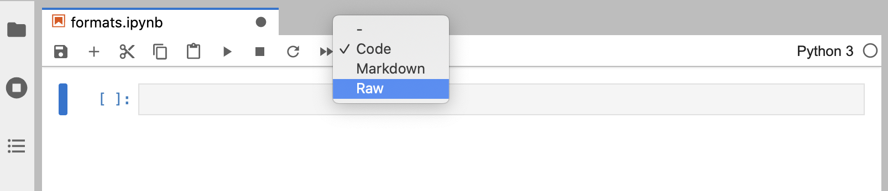
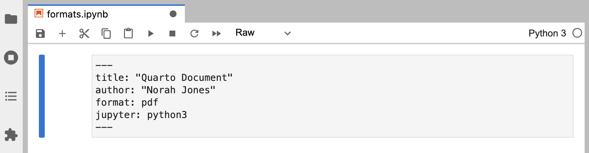
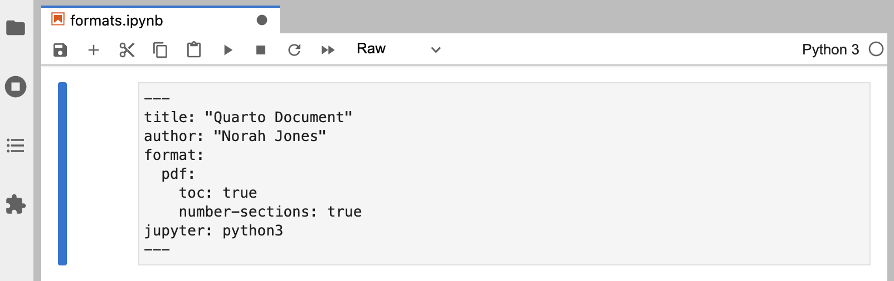
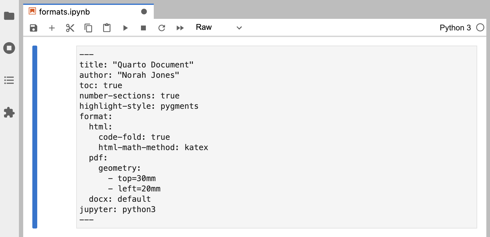
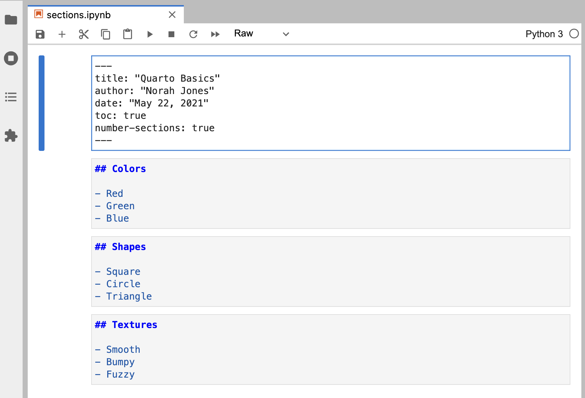
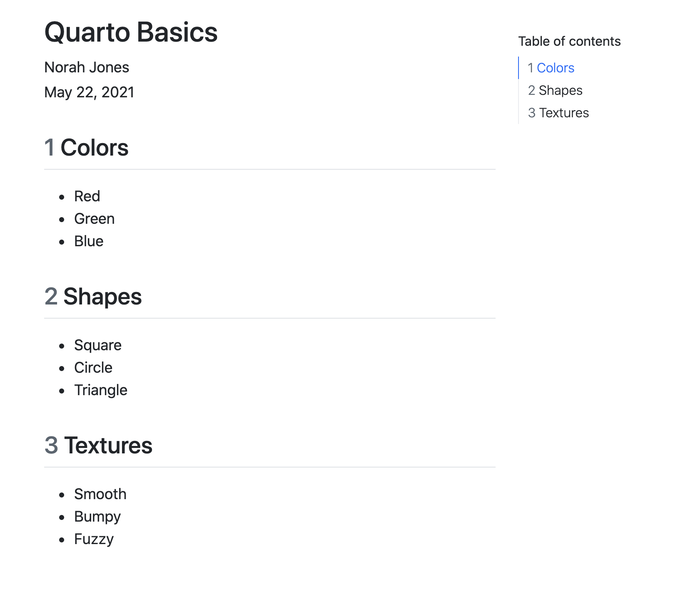
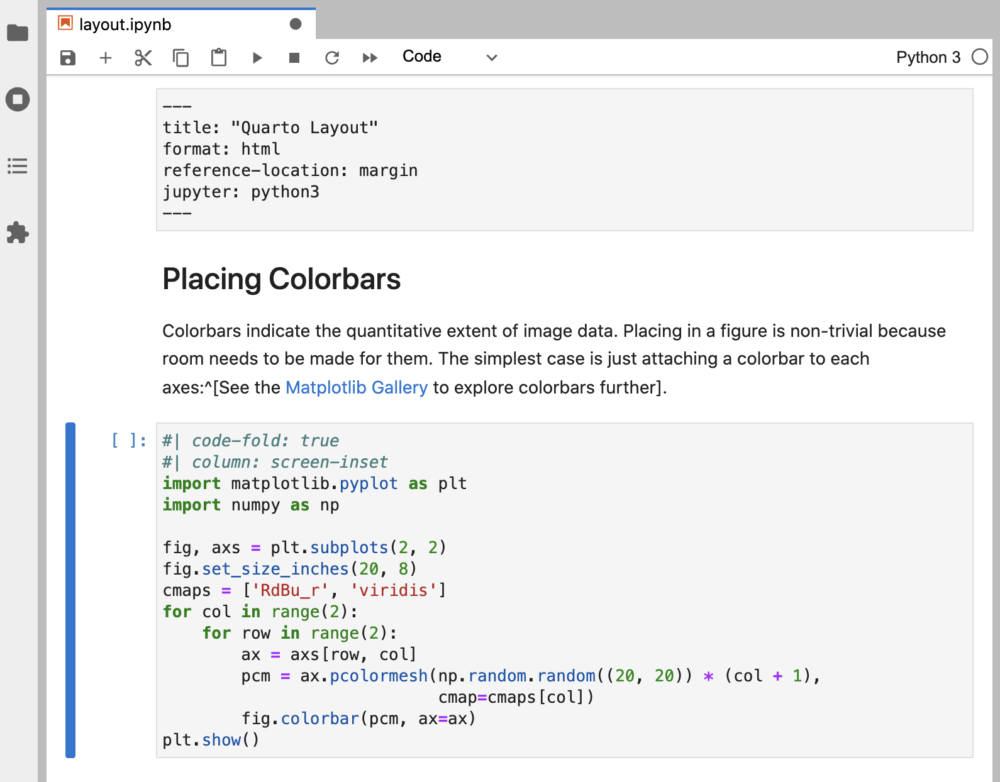

Tutorial: Authoring
../_tool-chooser.mdOverview
In this tutorial we’ll show you how to author Quarto documents in Jupyter Lab. In particular, we’ll discuss the various document formats you can produce and show you how to add components like table of contents, equations, citations, cross-references, and more.
Output Formats
Quarto supports rendering notebooks to dozens of different output formats. By default, the html format is used, but you can specify an alternate format (or formats) within document options.
Format Options
Let’s create a notebook and define various formats for it to be rendered to and add some options to each of the formats. As a reminder, document options are specified in YAML within a “Raw” cell at the beginning of the notebook. To create a Raw cell, add a cell at the top of the notebook and set its type to Raw using the notebook toolbar:

Now, let’s add some basic document metadata and a default output format.
---
title: "Quarto Document"
author: "Norah Jones"
format: pdf
jupyter: python3
---
We specified pdf as the default output format (if we exclude the format option then it will default to html).
Let’s add some options to control our PDF output.
---
title: "Quarto Document"
author: "Norah Jones"
format:
pdf:
toc: true
number-sections: true
jupyter: python3
---
Multiple Formats
Some documents you create will have only a single output format, however in many cases it will be desirable to support multiple formats. Let’s add the html and docx formats to our document.
---
title: "Quarto Document"
author: "Norah Jones"
toc: true
number-sections: true
highlight-style: pygments
format:
html:
code-fold: true
html-math-method: katex
pdf:
geometry:
- top=30mm
- left=20mm
docx: default
jupyter: python3
---
There’s a lot to take in here! Let’s break it down a bit. The first two lines are generic document metadata that aren’t related to output formats at all.
title: "Quarto Document"
author: "Norah Jones"The next three lines are document format options that apply to all formats. which is why they are specified at the root level.
toc: true
number-sections: true
highlight-style: pygmentsNext, we have the format option, where we provide format-specific options.
format:
html:
code-fold: true
html-math-method: katex
pdf:
geometry:
- top=30mm
- left=30mm
docx: defaultThe html and pdf formats each provide an option or two. For example, for the HTML output we want the user to have control over whether to show or hide the code (code-fold: true) and use katex for math text. For PDF we define some margins. The docx format is a bit different—it specifies docx: default. This means just use all of the default options for the format.
Rendering
The formats specified within document options define what is rendered by default. If we render the notebook with all the options given above using the following.
Terminal
quarto render notebook.ipynbThen, the following files would be created.
notebook.htmlnotebook.pdfnotebook.docx
We can select one or more formats using the --to option.
Terminal
quarto render notebook.ipynb --to docx
quarto render notebook.ipynb --to docx,pdfNote that the target file (in this case notebook.ipynb) should always be the very first command line argument.
If needed we can also render formats that aren’t specified within document options.
Terminal
quarto render notebook.ipynb --to odtSince the odt format isn’t included within document options, the default options for the format will be used.
Note that when rendering an .ipynb Quarto will not execute the cells within the notebook by default (the presumption being that you already executed them while editing the notebook). If you want to execute the cells you can pass the --execute flag to render.
Terminal
quarto render notebook.ipynb --executeSections
You can use a table of contents and/or section numbering to make it easier for readers to navigate your document. Do this by adding the toc and/or number-sections options to document options. Note that these options are typically specified at the root level because they are shared across all formats.
---
title: Quarto Basics
author: Norah Jones
date: 'May 22, 2021'
toc: true
number-sections: true
jupyter: python3
---
## Colors
- Red
- Green
- Blue
## Shapes
- Square
- Circle
- Triangle
## Textures
- Smooth
- Bumpy
- Fuzzy
Here’s what this document looks like when rendered to HTML.

There are lots of options available for controlling how the table of contents and section numbering behave. See the output format documentation (e.g. HTML, PDF, MS Word) for additional details.
Equations
You can add LaTeX equations to markdown cells within Jupyter Lab.
Einstein's theory of special relatively that expresses the equivalence of mass and energy:
$E = mc^{2}$\(E = mc^{2}\)

Equations are rendered when you run the cell.

Inline equations are delimited with $…$. To create equations in a new line (display equation) use $$…$$. See the documentation on markdown equations for additional details.
Citations
To cite other works within a Quarto document. First create a bibliography file in a supported format (BibTeX or CSL). Then, link the bibliography to your document using the bibliography YAML metadata option.
Here’s a notebook that includes a bibliography and single citation. Note that markdown cells are un-executed so you can see all of the syntax.
---
title: Quarto Basics
format: html
bibliography: references.bib
jupyter: python3
---
## Overview
Knuth says always be literate [@knuth1984].
```{python}
1 + 1
```
## References
Note that items within the bibliography are cited using the @citeid syntax.
Knuth says always be literate [@knuth1984].References will be included at the end of the document, so we include a ## References heading at the bottom of the notebook.
Here is what this document looks like when rendered.

The @ citation syntax is very flexible and includes support for prefixes, suffixes, locators, and in-text citations. See the documentation on Citations and Footnotes to learn more.
Cross References
Cross-references make it easier for readers to navigate your document by providing numbered references and hyperlinks to figures, tables, equations, and sections. Cross-reference-able entities generally require a label (unique identifier) and a caption.
The notebook below illustrates cross-referencing various types of entities. Once again, the markdown cells are again un-executed so that the syntax is visible.
---
title: Quarto Crossrefs
format: html
jupyter: python3
---
## Overview
See @fig-simple in @sec-plot for a demonstration of a simple plot.
See @eq-stddev to better understand standard deviation.
## Plot {#sec-plot}
```{python}
#| label: fig-simple
#| fig-cap: Simple Plot
import matplotlib.pyplot as plt
plt.plot([1,23,2,4])
plt.show()
```
## Equation {#sec-equation}
$$
s = \sqrt{\frac{1}{N-1} \sum_{i=1}^N (x_i - \overline{x})^2}
$$ {#eq-stddev}\[ x + 1 \]

This example includes cross-referenced sections, figures, and equations. The table below shows how we expressed each of these.
| Entity | Reference | Label / Caption |
|---|---|---|
| Section | @sec-plot |
ID added to heading: |
| Figure | @fig-simple |
YAML options in code cell: |
| Equation | @eq-stddev |
At end of display equation: |
And finally, here is what this notebook looks like when rendered.

See the article on Cross References to learn more, including how to customize caption and reference text (e.g. use “Fig.” rather than “Figure”).
Callouts
Callouts are an excellent way to draw extra attention to certain concepts, or to more clearly indicate that certain content is supplemental or applicable to only some scenarios.
Callouts are markdown divs that have special callout attributes. Here’s an example of creating a callout within a markdown cell.
::: {.callout-note}
Note that there are five types of callouts, including:
`note`, `tip`, `warning`, `caution`, and `important`.
:::
Note that if we run this cell you’ll see that the output looks nothing like a callout! This is because callouts aren’t supported natively by the markdown renderer built in to Jupyter Lab.

However, when we ultimately render the document with Quarto the callout appears as intended.
Note that there are five types of callouts, including note, tip, warning, caution, and important.
You can learn more about the different types of callouts and options for their appearance in the Callouts documentation.
Article Layout
The body of Quarto articles have a default width of approximately 700 pixels. This width is chosen to optimize readability. This normally leaves some available space in the document margins and there are a few ways you can take advantage of this space.
In this notebook, we use the reference-location option to indicate that we would like footnotes to be placed in the right margin.
We also use the column: screen-inset cell option to indicate we would like our figure to occupy the full width of the screen, with a small inset.
---
title: Quarto Layout
format: html
reference-location: margin
jupyter: python3
---
## Placing Colorbars
Colorbars indicate the quantitative extent of image data.
Placing in a figure is non-trivial because room needs to
be made for them. The simplest case is just attaching a
colorbar to each axes:^[See the [Matplotlib Gallery](https://matplotlib.org/stable/gallery/subplots_axes_and_figures/colorbar_placement.html) to explore colorbars further].
```{python}
#| code-fold: true
#| column: screen-inset
import matplotlib.pyplot as plt
import numpy as np
fig, axs = plt.subplots(2, 2)
fig.set_size_inches(20, 8)
cmaps = ['RdBu_r', 'viridis']
for col in range(2):
for row in range(2):
ax = axs[row, col]
pcm = ax.pcolormesh(
np.random.random((20, 20)) * (col + 1),
cmap=cmaps[col]
)
fig.colorbar(pcm, ax=ax)
plt.show()
```
Here is what this document looks like when rendered.

You can locate citations, footnotes, and asides in the margin. You can also define custom column spans for figures, tables, or other content. See the documentation on Article Layout for additional details.
_footer.md